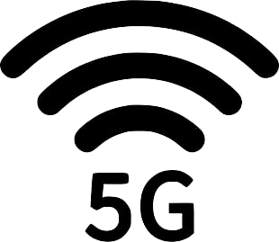
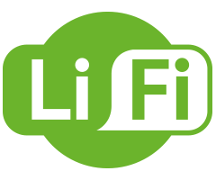

Un triplete de jugadores los cuales cuentan con una habilidad comparable con la del mismisimo Leonel Messi. Estos son:
Correo: ca.sazara@uniandes.edu.co
Hobbies: Carlitos no es solo un astro con el balón, también es un astro con las fichas de ajedrez, reemplazaria a Leonel en el FC Barcelona pero se chingo la rodilla, mientras tanto, está en la selección de ajedrez de la Universidad donde sueña con algun dia vencer al mismisimo Magnus Carlsen.
Correo:as.rojas10@uniandes.edu.co
Hobbies: Como era de esperarse Santi también es un astro con el balón. Sin embargo, su nivel de messi es en el grupo es un nivel de messi chiquito. Le gusta la parte empresarial de Ingeniria de Sistemas y sueña con algún día ser más rico que Jeff Bezos. Mientras tanto, entrena fuertemente futbol en la Universidad para aumentar si nivel de juego a Messi grande. Le queda mucho camino por recorrer a nuestro compañero.
Correo: je.canizarez@uniandes.edu.co
Hobbies: Además de ser un astro con el balón. Juan toca ukelele y le gusta la seguridad informatica.
El 5G permitirá navegar hasta a 10 GBps (gigabytes por segundo), 10 veces más rápido que las principales ofertas de fibra óptica del mercado. A ese ritmo se podrá, por ejemplo, descargar una película completa en cuestión de segundos. Además, la latencia (el tiempo de respuesta de la red) también experimentará un avance significativo. Según los operadores, esta podría reducirse a 5 milisegundos, un período casi imperceptible para los humanos, lo cual nos permitirá conectarnos prácticamente en tiempo real.
LiFi es el nombre más común de una tecnología de comunicaciones ópticas que lleva investigándose más de 100 años que consiste en transmitir datos a frecuencias entre 400 y 800 THz en espacio abierto. Lo que pretende el LiFi es transmitir información con objetos tradicionales, como bombillas LED, al mismo tiempo que se ilumina una habitación. Para ello sólo se necesita añadir unos cuantos elementos a las bombillas de hoy en día. Estas piezas son muy fáciles y económicas de fabricar. El gran salto de esta tecnología se produjo en 2011, cuando el profesor Herald Hass, de la Universidad de Edimburgo, mostró el primer dispositivo LiFi que transmitía información a 10 Mbps. Las ventajas de la tecnología LiFi son muchas. Por ejemplo, no satura parte del espectro usado actualmente por otros sistemas, ya que usa luz visible. También permite un mayor control sobre a quién están llegando los datos y hace que las redes de corto alcance sean más seguras.
